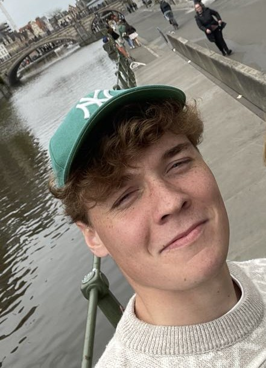
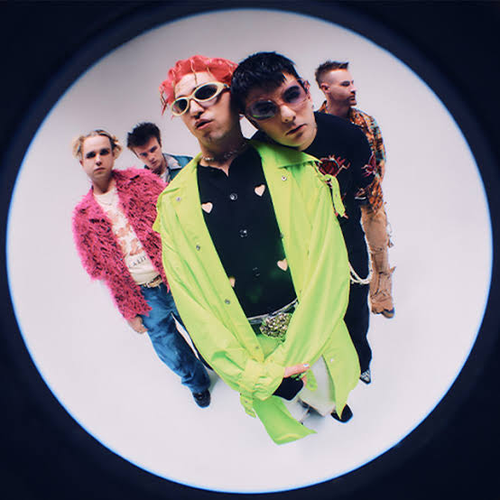
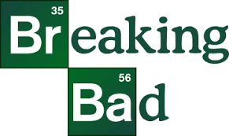

Lopen
Ik ben sinds kort terug begonnen met lopen. Ik heb vroeger nog triatlon gedaan, dus ik weet wat het is om intensieve inspanningen te doen. Mijn doel dat ik gesteld heb is de marathon van Koksijde.

Ik ben sinds kort terug begonnen met lopen. Ik heb vroeger nog triatlon gedaan, dus ik weet wat het is om intensieve inspanningen te doen. Mijn doel dat ik gesteld heb is de marathon van Koksijde.
In mijn vrije tijd kijk ik graag naar voetbalmatchen, ondanks dat ik het zelf nooit gedaan heb.
Ik heb enkele jaren een abonnement voor Zulte Waregem gehad.
Mijn vriendin woont in de Vlaamse Ardennen. Ik vind het leuk om daar te gaan wandelen.
Mijn favoriete wandeling in die streek is de Panoramaroute.
Fontaines D.C. is de groep waar ik het vaakst naar luister. Ik ben ook al eens naar een concert van hun geweest.

Breaking Bad is mijn all-time favoriete serie. Ondanks de vele afleveringen heb ik de serie al 5x gezien.

| Student | Web Development 1 | Fundamentals of Programming 1 | Databases |
|---|---|---|---|
| Daan | 12 | 14 | 15 |
| Fredje | 18 | 12 | 9 |
| Monique | 20 | 20 | 20 |
| Chantal | 11 | 12 | 13 |